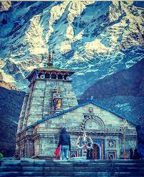
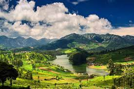
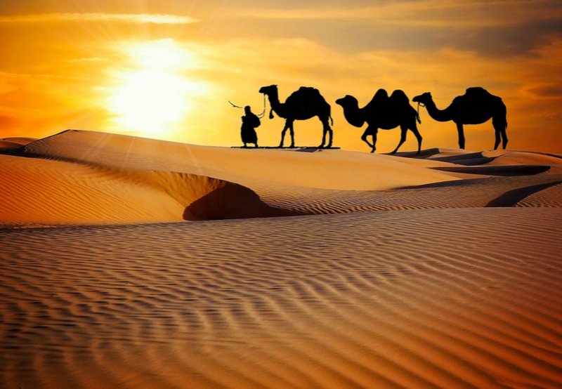

Kedarnath
Kedarnath Temple is a Hindu temple dedicated to Shiva. Located on the Garhwal Himalayan range near the Mandakini river, Kedarnath is located in the state of Uttarakhand, India. Due to extreme weather conditions, the temple is open to the general public only between the months of April (Akshaya Tritiya) and November (Kartik Purnima, the autumn full moon). During the winters, the vigraha (deity) from Kedarnath temple is carried down to Ukhimath and where the deity is worshiped for the next six months. Kedarnath is seen as a homogenous form of Shiva, the 'Lord of Kedarkhand', the historical name of the region.
Ooty
Ooty tourism is a consolidated picture made of ninety-five parts Nature in Nilgiri hills, Ketti Valley, Pine Forests, and five parts Human in Golf Course, Mariamman Temple, Stone house, etc but every things that falls in the purview of eyes takes to another world of exhileration. Such is the charm of the place.Ooty hill station is the kind of pleasant jolt individuals need to break away the rut of life with the oomph factor the place is surrounded with rubbing off the same glory to its name as well.
Goa

Goa is one of the most favorite destination among Indian tourists due to its pristine beaches. Dotted with hundreds of impressive beaches in Goa, the incredible coastline of more than 100 km offers beautiful views and serenity where tourists enjoy and relax in the Sun. Every beach has its specialty, beauty, and serenity where tourists enjoy their best. The importance of tourism in Goa is also because of its unparalleled experience of cruising. This must-have experience in Goa is very beautiful and unique than any water sports or adventure activity. This beautiful city offers amazing river and sea cruises that will make your Goa holidays memorable.
Rajasthan
Rajasthan is a state in the northwest of India. It is mainly arid and its western border is adjacent to Pakistan. The main attraction for travellers is the vast Thar Desert and one of the oldest mountain ranges in the world, the Aravallis. The Rajput heritage which is apparent in the forts, temples and palaces established by the Rajput Kings like Bappa Rawal, Rana Kumbha, Rana Sanga and Rana Pratap are also popular places to visit.